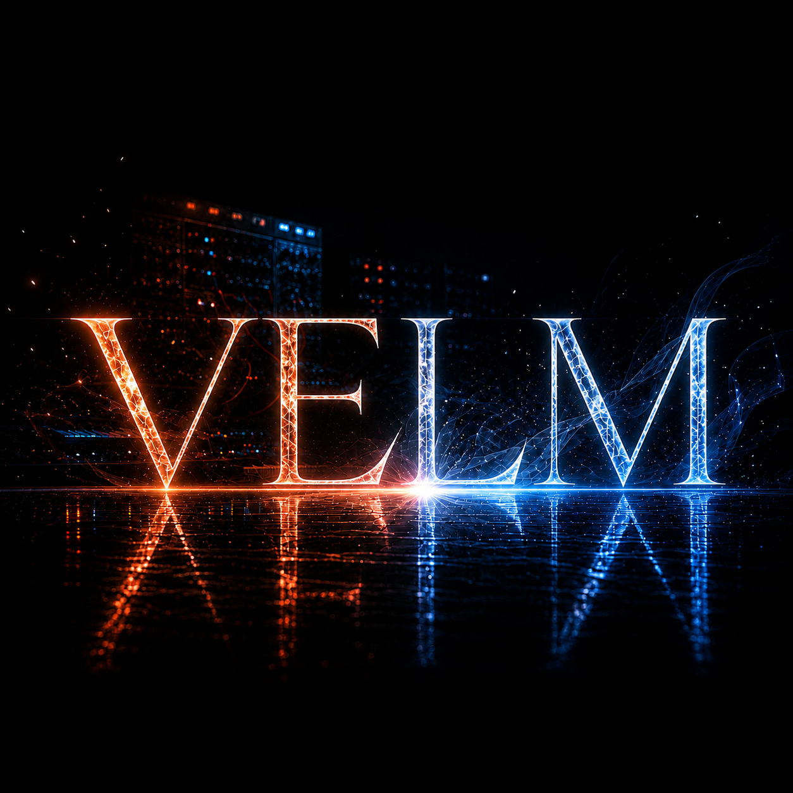

YORU
Vocal / Lyrics
ヨル 4月10日生まれ
人の気持ちの変化によく気づく、面倒見のいいボーカル。幼い頃からピアノや吹奏楽に親しみ、大学でアリアとナギサに出会ってロックの世界へ。繊細な感情を、歌と言葉で届ける。

VELMは、言葉にならない感情や、胸の奥に残る違和感を音楽にする4人組ロックバンド。
静けさの中にある危うさと、重厚で鋭いサウンド。
ヨル、アリア、レイ、ナギサ、それぞれの感情と個性が重なり、ひとつの音を生み出している。
迷いや痛みを無理に答えに変えるのではなく、そのまま抱えながら前へ進む。
VELMは、言葉では届かない想いを音にして届けていく。
Vocal / Lyrics
ヨル 4月10日生まれ
人の気持ちの変化によく気づく、面倒見のいいボーカル。幼い頃からピアノや吹奏楽に親しみ、大学でアリアとナギサに出会ってロックの世界へ。繊細な感情を、歌と言葉で届ける。
Guitar
アリア 10月17日生まれ
人見知りで、普段は気まま。でも、好きな音にはとことんこだわる。音楽好きの父親の影響でロックに出会い、ギターを弾く楽しさに夢中になった。ナギサとは高校時代からの親友。
Bass
レイ 1月24日生まれ
落ち着いた雰囲気を持つ、メンバー最年長のベーシスト。重厚なロックを好み、低音の響きや音の厚みを大切にしている。力強い演奏で、VELMのサウンドを支える。
Drums
ナギサ 8月8日生まれ
兄たちの影響で、スポーツも音楽も楽しんできたドラマー。バスケやダンスで身につけたリズム感が、パワフルな演奏につながっている。アリアとは高校時代からの親友で、ロックもダンスミュージックも好き。